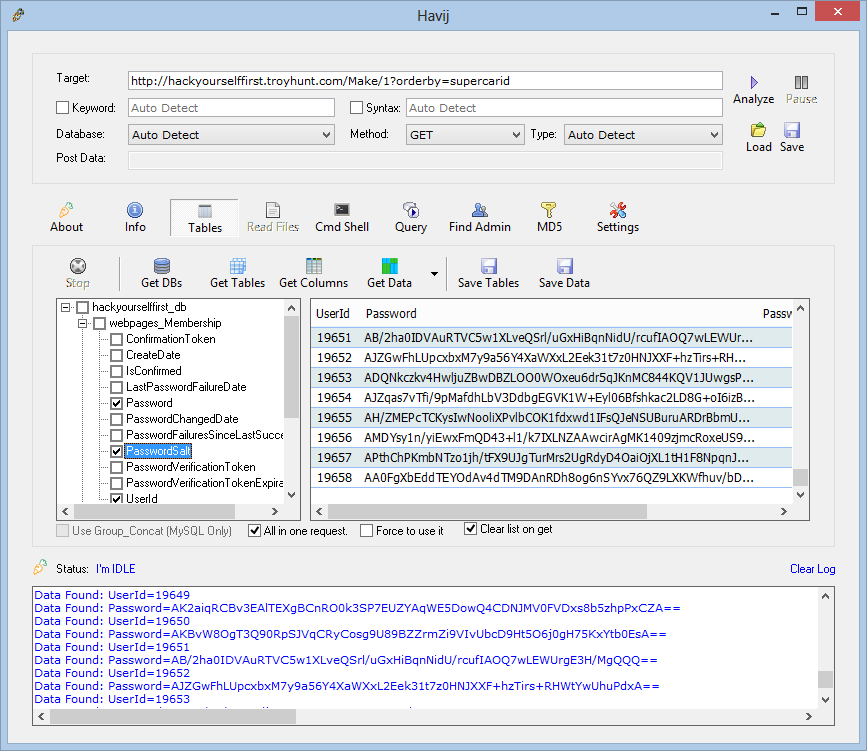

What I learned from...
Alaeddin Nassani

Why transitions


CSS Transitions
#elementId{
transition-property: box-shadow;
transition-duration: 1s;
transition-timing-function: linear;
transition-delay: 2s;
}
transition: box-shadow 1s linear 2s;
Animatable properties
max-height, box-shadow, max-width, etc...

underline, display, float, etc...
timing function
linear|ease|ease-in|ease-in-out|ease-out
See the Pen Bqljv by Alaeddin Nassani (@an83) on CodePen.
Fancy timing function
Animations & @keyframes
@keyframes NAME-YOUR-ANIMATION {
0% { font-size: 10px; }
30% { font-size: 15px; }
100% { font-size: 12px; }
}
#elementID {
animation-name: NAME-YOUR-ANIMATION;
animation-duration: 10s;
...
}
pre-defined animations
Shapes
See the Pen CSS Shapes: Ellipse by Adobe Web Platform (@adobe) on CodePen.
Regions

flow-intoflow-from
Polygons
shape-insideshape-outside
See the Pen Polygon Dawn by Adobe Web Platform (@adobe) on CodePen.
Summary
- Animations bring life to your website
- CSS3 shapes and regions make content cool

ECMAscript 6 Main features
- Block-scoped variables
- deconstructing
- classes
- modules
- template
- library
- for-of loop
Block-scoped variables (var vs. let)
function order(){
if (x > y) {
var temp = x;
x = y;
y = temp;
}
console.log(temp === x); //true
return [x, y];
}
function order(){
if (x > y) {
let temp = x;
x = y;
y = temp;
}
console.log(temp === x); //ReferenceError: tmp is not defined
return [x, y];
}
Deconstructing
Objects
let obj = { first: 'Jane', last: 'Doe' };
let { first: f , last: l } = obj;
console.log(f + ' ' + l); // Jane Doe
Arrays
let [x, y] = [ 'a', 'b' ]; // x='a', y='b'
let [x, y, ...rest] = [ 'a', 'b', 'c', 'd' ]; // x='a', y='b', rest = [ 'c', 'd' ]
[x,y] = [y,x]; // swap values
Arrow functions
let squares = [1, 2, 3].map(function (x) {return x * x});
let squares = [1, 2, 3].map(x => x * x);
lexical this
//ES5
function Person() {
this.age = 0;
var that = this;
setInterval(function growUp() {
that.age++;
}, 1000);
}
//ES6
function Person(){
this.age = 0;
setInterval(() => {
this.age++;
}, 1000);
}
...
rest parameters
function func2(arg0, ...others) {
return others;
}
> func2(0, 1, 2, 3)
[1, 2, 3]
> func2(0)
[]
> func2()
[]
spread parameters
> Math.max(7, 4, 11)
11
> Math.max(...[7, 4, 11])
11
classes
//ES5
function Point(x, y) {
this.x = x;
this.y = y;
}
Point.prototype.toString = function () {
return '('+this.x+', '+this.y+')';
};
//ES6
class Point {
constructor(x, y) {
this.x = x;
this.y = y;
}
toString() {
return '('+this.x+', '+this.y+')';
}
}
Inheritance
//ES5
function ColorPoint(x, y, color) {
Point.call(this, x, y);
this.color = color;
}
ColorPoint.prototype = Object.create(Point.prototype);
ColorPoint.prototype.constructor = ColorPoint;
ColorPoint.prototype.toString = function () {
return this.color+' '+Point.prototype.toString.call(this);
}
//ES6
class ColorPoint extends Point {
constructor(x, y, color) {
super(x, y); // same as super.constructor(x, y)
this.color = color;
}
toString() {
return this.color+' '+super();
}
}
modules
// lib/math.js
let notExported = 'abc';
export function square(x) {
return x * x;
}
export const MY_CONSTANT = 123;
// main.js
import {square} from 'lib/math';
console.log(square(3));
// or
import 'lib/math' as math;
console.log(math.square(3));
Can I use it?
Web Components

To add a widget...
$(function() {
$('[data-my-widget]').myWidget();
});
What if...
#document-fragment
Web Components Umbrella
- Custom Elements
- Shadow DOM
- Template Element
- HTML Import
- CSS Decorators
input type="date"
How to..
document.register('my-element', {
prototype: Object.create(HTMLElement.prototype, {
createdCallback: {
value: function() {
var shadow = this.createShadowRoot();
shadow.innerHTML = 'Hello World';
}
}
})});
my-element::part(world) {
color: green;
}
Advantages
- Simple
- Consistent
- Reusable
- Encapsulated
- Composable
Can I use...?
Hack yourself first
SQL Injection
...using havij
Script Injection attack
...using Fiddler
if (oSession.oResponse.headers.ExistsAndContains("Content-Type","text/html")){
oSession.utilDecodeResponse();
oSession.utilReplaceInResponse('